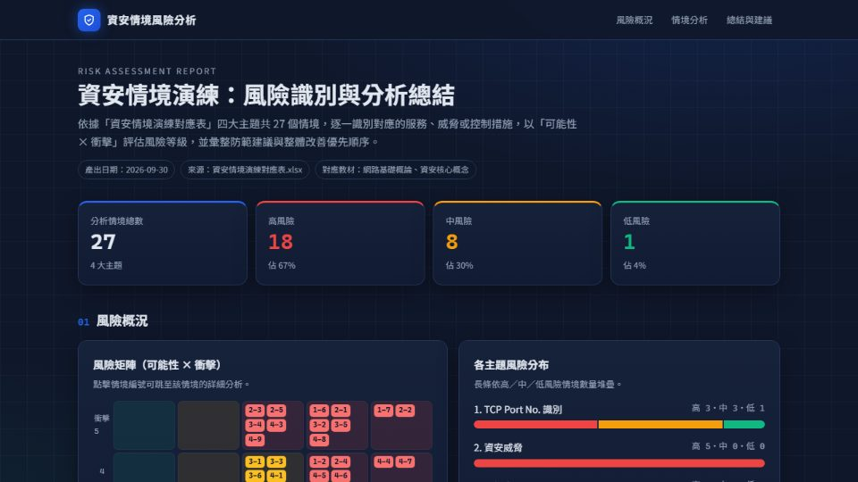
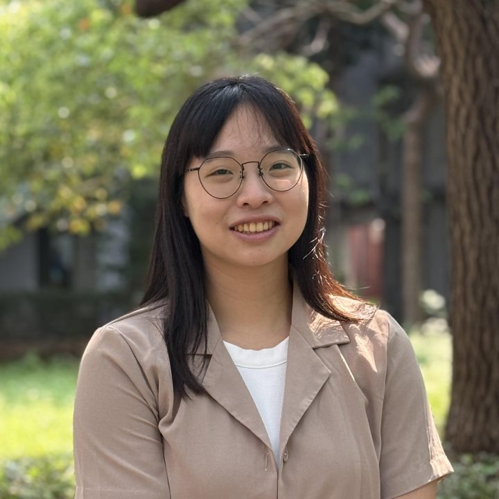

RISK ANALYSISKelly Chen
_
Former Tax Officer and Treasury Analyst supporting SkyPay cross-border payments, now building risk and payments data skills with SQL, Python and Tableau.
前公職稅務員，擁有 5 年以上稅務查核與財產資料管理經驗；轉職金融科技後，負責 SkyPay 跨境支付的 USD / USDT 資金調度，並主導兩套財務營運系統建置，交付菲律賓營運團隊每日使用。 目前在 AI 大數據班受訓，學習 SQL、Python、數據視覺化與生成式 AI，目標成為金融科技領域的數據／商業分析師。

📊SQL
🐍Python
💱FinTech
🧾Tax · 5 yrs
About Me關於我
我是 Kelly。我喜歡把混亂的事情整理成有邏輯的系統。
在 宜蘭縣財政稅務局與基隆市稅務局的五年多裡，我負責跨 50 多個機關的財產異動審核、欠稅資料分析與移送執行報表，練出對數字異常的敏感度，也習慣用 Excel 進階公式把重複的比對工作自動化。
2026 年轉職金融科技，擔任財務資金管理分析師，負責 SkyPay 跨境支付的資金調度。入職一個月內就打造了 USD / USDT 營運與即時績效分析系統，並把 7 道人工作業串成 AutoTools 自動化管線，省下 80% 以上的重複性工時。
現在，我正在 AI 大數據班把「懂業務」接上「會動手」：SQL、Python、數據視覺化、雲端與 LLM。我想成為那種聽得懂財務與合規的語言、又能用資料把它講清楚的分析師。
Vitals
- 🎯Data / Business Analyst求職方向 · 金融科技 · 台北／混合／海外遠端皆可
- 🧠AI 大數據班 受訓中第 9 梯次 · 2026.09 – 2027.02
- 💼財務資金管理分析師金融科技 · 2026
- 🏛️5+ 年公職稅務經歷宜蘭縣財政稅務局 · 基隆市稅務局
- 🎓國立高雄科技大學財富與稅務管理系
- 📍台北，台灣 🇹🇼kelly.chen.ai.data@gmail.com
🏃♀️ 跑步🏋️♀️ 健身🤿 潛水✈️ 旅行
Skill Stack我帶來的，與我正在補的
實務使用課程中
📊Data & Analytics
Excel 進階公式資料清理報表自動化Dashboard 規劃
SQLPython / Pandas數據視覺化平台
💱Finance & Tax
稅務法規欠稅分析財產異動審核跨境資金調度
USD / USDT 多幣別匯率風險評估FIFO / 加權平均會計核算
⚙️Automation
PowerShellGoogle Apps ScriptPython 腳本Gmail 批量草稿
Human-in-the-loopSOP 撰寫
🤖AI
Prompt 設計AI 輔助報告產製
資料科學生成式 AILLM 應用
🖥️Engineering
Linux 指令ReactHTML / CSSGitHub Pages
Git 協作Docker雲端平台NoSQL
🧰Tools
GitHubHackMDQuickBooks奇勝會計軟體
Google WorkspacePowerPoint / Word
Featured Projects每一個作品，都是先從一個真實的麻煩開始
GOVTECH · RULE ENGINE
繼承系統表自動產生系統（雛形）
在稅務工作中，繼承系統表是最耗時、也最容易算錯的文書之一。我把「判斷法定繼承人 → 計算應繼分 → 畫出樹狀圖」做成離線工具：匯入戶籍資料自動辨識欄位，處理代位、再轉與拋棄繼承，並列出還需調閱的人。全程在本機執行、不對外連線，範例資料皆為虛構。
2版本互相驗證
0對外連線
6步戶籍匯入流程
規則引擎個資保護設計JavaScriptPython單元測試
👤 獨立開發 · 原型
FINTECH · BI
SkyPay｜USD / USDT 營運與即時績效分析系統
跨幣別換匯結算與損益追蹤原本靠手動複製貼上。我重構端到端流程：自動化批次匯入、「兩步驟非同步確認」消除對帳時差、支援 FIFO 與加權平均的即時毛利試算，並規劃多維度管理儀表板。
−70%重複打字工時
1 個月入職到上線
流程重構成本分攤邏輯Dashboard
👤 主導設計
AUTOMATION
AutoTools：跨國營運表單派發系統
把破碎的 7 道人工作業串成一條自動化管線。堅持「系統只產草稿，發送權留給人」，搭配 8 個月防重複掃描機制，並撰寫雙語操作手冊讓跨國團隊順利導入。
−80%重複性工時
100%寄送準確率
PowerShellGoogle Apps ScriptSOP
👤 獨立開發
Capstone · Planned Q1 2027
數位金融用戶流失率預測 Digital Banking Churn Prediction
目標：在用戶流失前及早辨識高風險客群，讓營運與留存團隊能提前介入。預計以 Python 進行特徵工程與分類模型，並用 Tableau 做給業務端看的儀表板。完成後更新實際成果。
Recall高風險用戶辨識
Churn %分群流失率
BI決策儀表板
Pythonscikit-learnSQLTableau
🚧 進行中
Career & Academics Timeline每一段經歷，都成為下一段旅程的養分
🧠
AI 大數據班（第 9 梯次）
產業人才培訓 · 全日制 5 個月
- Linux、SQL / NoSQL、Python、前端基礎、Git 與 Docker 協作開發。
- 數據視覺化分析平台、日誌分析、資料整合應用、雲端平台。
- 資料科學與生成式 AI、LLM 大型語言模型，最後以畢業專題收尾。
💼
財務資金管理分析師
有福智能科技有限公司（Craft AI Solutions）· SkyPay 跨境支付
- 負責國內外電匯與銀行轉帳，針對三角貿易等跨國交易進行資金操作與流動性規劃。
- 即時監控銀行餘額、利率與匯率波動；運用 Excel 與 Python 進行匯率風險評估與利息預測。
- 自動化核對 QuickBooks 與銀行對帳單，確保帳務 100% 準確。
- 打造 USD / USDT 營運與即時績效分析系統與 AutoTools 自動化表單派發系統。
- 隸屬財務部，同時支援 SkyPay 與同一老闆旗下多家公司：擔任 SkyPay 交易員，並負責其他公司的財務與帳務。
- 主導 2 項財務營運系統建置，交付菲律賓 SkyPay 營運團隊每日使用。
🏛️
稅務員
基隆市稅務局
- 與金融機構合作查詢欠稅人存款資料，負責後續整理與匯入。
- 運用 Excel 進行納稅義務人資料報表清理，優化不動產移轉清欠資料流程。
- 產製欠稅數分析表、移送執行月報表及大額欠稅分析報告。
🏛️
科員
宜蘭縣政府財政稅務局
- 負責跨單位（50 多個行政機關）的財產異動與審核，確保產籍資料正確。
- 透過 Excel 進階公式優化多系統間的數據比對與異常管理流程。
- 將公告地價與現值更新轉換彙整，並與系統廠商合作完成資料匯入。
🧾
帳務專員 · 助理記帳員
會計師事務所 · 記帳士事務所
- 審查財會與稅會收支憑證、檢閱異常交易，製作財務報表並覆核各項稅務申報。
- 入職首月補齊前任留下的半年份積壓帳務，獲主管高度認可。
- 從大三暑期實習生做起，因學習能力受肯定轉任工讀生。
🎓
財富與稅務管理系 財政稅務組
國立高雄科技大學
- 四技畢業，主修財政稅務；就學期間即進入記帳士事務所實習。
Learning Notes公開記錄 AI 數據課程的學習，每一篇都連回金融與財務的實務情境
01HTML 是一棵樹（DOM Tree）
網頁由「標籤」層層包住組成，像一份有章節的公文：<html> 是整份文件，<body> 是內文，<table>、<div> 是段落。爬蟲做的事，就是在這棵樹裡找到要的那一格資料。
<table id="fx-rates"> <tr class="row"> <td class="currency">USD</td> <td class="rate" data-type="spot-buy">31.85</td> </tr> </table>
02爬蟲靠什麼定位？
| 定位方式 | CSS Selector | 特性 |
|---|---|---|
| id（身分證） | #fx-rates | 整頁唯一，最穩定 |
| class（分類） | .rate | 可重複，抓一整列同類資料 |
| 標籤 + 屬性 | td[data-type="spot-buy"] | 精準鎖定特定欄位 |
| 層級關係 | #fx-rates tr td.rate | 由外而內逐層縮小範圍 |
小技巧：Chrome 按 F12 開 DevTools，對目標按右鍵 →「Copy selector」就能取得定位路徑。
03實作：用 Python 抓匯率表
import requests from bs4 import BeautifulSoup html = requests.get(url, timeout=10).text soup = BeautifulSoup(html, "html.parser") # 用 CSS Selector 一次抓出所有匯率 for row in soup.select("#fx-rates tr.row"): currency = row.select_one(".currency").text rate = float(row.select_one(".rate").text) print(currency, rate)
04我的財務觀點
做資金管理時，每天都要手動抄錄銀行牌告匯率做風險評估。看懂 HTML 結構後，這件事可以變成每天自動執行的排程，資料直接進入匯率風險模型。
Key takeaway：爬蟲的關鍵不是程式碼，而是「看懂結構」——就像查帳先看懂科目結構，才知道數字該去哪裡找。抓取前也要確認網站的
robots.txt 與使用條款，這是合規思維的一部分。Learning Log 課程進度依今天日期自動更新
Credentials證照與資格
📈
證券商業務員
證券暨期貨市場發展基金會🏦
金融市場常識與職業道德
台灣金融研訓院🧮
丙級會計事務技術士
勞動部技能檢定💻
丙級電腦軟體應用技術士
勞動部技能檢定🧾
TQC-OA 電腦會計
電腦技能基金會📝
TBSA 商務企劃能力初級
商務企劃能力檢定🏛️
公職稅務經歷 5+ 年
2020 – 2026🧠
AI 大數據班 結訓
預計 2027.02Let's Connect有遠端的金融科技數據職缺？歡迎來信聊聊
Contact
✉️
📍
Location
台北，台灣 · Open to remote
🎯
Looking for
Data / Business Analyst · FinTech